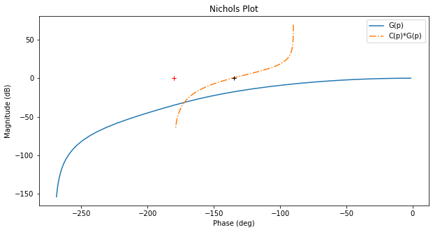
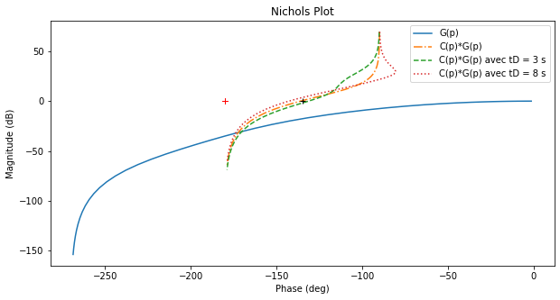
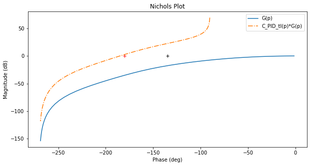
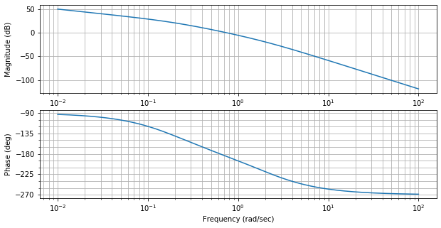
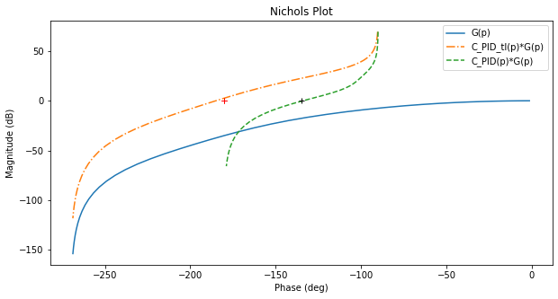

Solution:
L’annulation de l’erreur de position sera assurée par le pole à
l’origine du correcteur.
Fixer l’erreur de vitesse à 33% impose le gain :
\(\varepsilon_v={\frac{1}{K_P}}=0.33\) d’où \(K_P=3\).
Nous choisirons \(\tau_I=20\) s pour supprimer le pôle dominant du
processus.
Et \(\tau_D=5\) s pour compenser la deuxième constante de temps du
process …
On trace le système ainsi corrigé pour vérifier si la marge de phase est
bien correcte :
+ show/hide code from IPython.display import display, Markdown
from control.matlab import * # Python Control Systems Toolbox (compatibility with MATLAB)
import numpy as np # Library to manipulate array and matrix
import matplotlib.pyplot as plt # Library to create figures and plots
import math # Library to be able to do some mathematical operations
import ReguLabFct as rlf # Library useful for the laboratory of regulation of Gramme
# Fonction de transfert en boucle ouverte
G1 = tf(1, [0.5, 1])
G2 = tf(1, [5, 1])
G3 = tf(1, [20, 1])
G = G1*G2*G3 # G de l'énoncé
MP = 45 # Marge de phase réclamée
Kp = 3
tI = 20
tD = 5
Corr = Kp*tf([tD, 1],[1, 0])*tf([tI, 1], 1)
fig = plt.figure("Nichols",figsize=(10,5))
ax = fig.subplots()
rlf.nichols(G, grid = False, labels=['G(p)'], NameOfFigure = "Nichols")
rlf.nichols(Corr*G, grid = False, labels=['C(p)*G(p)'], NameOfFigure = "Nichols", linestyle = '-.')
ax.plot(-180+MP, 0,'k+'); # Ajout du repère (+) par lequel on est censé passer
gm, pm, wg, wp = margin(Corr*G) # Extrait la marge de gain (Gm) et de phase (Pm)
print(f"Le système ainsi corrigé présente une marge de phase de {pm:.2f}° et une marge de gain de {gm:.2f} dB.")
Le système ainsi corrigé présente une marge de phase de 43.88° et une marge de gain de inf dB.

Si la marge est trop petite, il faut … \(\tau_D\)
Si la marge est trop grande, il faut … \(\tau_D\)
+ show/hide code Corr1 = Kp*tf([3, 1],[1, 0])*tf([tI, 1], 1)
Corr2 = Kp*tf([8, 1],[1, 0])*tf([tI, 1], 1)
fig = plt.figure("Nichols",figsize=(10,5))
ax = fig.subplots()
rlf.nichols(G, grid = False, labels=['G(p)'], NameOfFigure = "Nichols")
rlf.nichols(Corr*G, grid = False, labels=['C(p)*G(p)'], NameOfFigure = "Nichols", linestyle = '-.')
rlf.nichols(Corr1*G, grid = False, labels=['C(p)*G(p) avec tD = 3 s'], NameOfFigure = "Nichols", linestyle = '--')
rlf.nichols(Corr2*G, grid = False, labels=['C(p)*G(p) avec tD = 8 s'], NameOfFigure = "Nichols", linestyle = ':')
ax.plot(-180+MP, 0,'k+'); # Ajout du repère (+) par lequel on est censé passer
gm, pm, wg, wp = margin(Corr1*G) # Extrait la marge de gain (Gm) et de phase (Pm)
display(Markdown(rf"Le système corrigé avec $\tau_D=3$ s présente une marge de phase de {pm:.2f}° et une marge de gain de {gm:.2f} dB."))
gm, pm, wg, wp = margin(Corr2*G) # Extrait la marge de gain (Gm) et de phase (Pm)
display(Markdown(rf"Le système corrigé avec $\tau_D=8$ s présente une marge de phase de {pm:.2f}° et une marge de gain de {gm:.2f} dB."))
Le système corrigé avec \(\tau_D=3\) s présente une marge de phase
de 48.62° et une marge de gain de inf dB.
Le système corrigé avec \(\tau_D=8\) s présente une marge de phase
de 37.16° et une marge de gain de inf dB.

Si l’on souhaite dimensionner le correcteur D par placement fréquentiel:
Pour placer \(\tau_D\), nous partons du fait que, pour
\(\omega>\frac{1}{\tau_D}\), le terme \((1+\tau_D*p)\) produit
une augmentation du module et un déphasage qui lui est de +90°.
+ show/hide code tI = 20
Corr_PID_tI = Kp*tf([tI, 1], [1, 0])
fig = plt.figure("Nichols",figsize=(10,5))
ax = fig.subplots()
rlf.nichols(G, grid = False, labels=['G(p)'], NameOfFigure = "Nichols")
rlf.nichols(Corr_PID_tI*G, grid = False, labels=['C_PID_tI(p)*G(p)'], NameOfFigure = "Nichols", linestyle = '-.')
ax.plot(-180+MP, 0,'k+'); # Ajout du repère (+) par lequel on est censé passer

Sur la tracé de :
\(\frac{3}{p}(1+20p)\frac{1}{(1+0.5p)(1+5p)(1+20p)}=\frac{3}{p}\frac{1}{(1+0.5p)(1+5p)}\)
(trait mixte), on cherche le point dont la phase est 90° trop à gauche
du point fatidique (0dB, -135°) représenté par une croix noire.
+ show/hide code fig = plt.figure("Bode",figsize=(10,5))
ax = fig.subplots()
mag, w = rlf.getValues(Corr_PID_tI*G, -225, printValue=False, NameOfFigure="Bode")
tD = 10/w
display(Markdown(rf"Le point dont la phase vaut -225° a un module de {20*np.log10(mag):.0f} dB. Sa pulsation est de {w:.1f} rad/s et donc nous allons fixer {w:.1f}="r"$\frac{10}{\tau_D}$ soit ${\tau_D}$"rf"={tD:.3f} s."))
Le point dont la phase vaut -225° a un module de -23 dB. Sa pulsation
est de 2.4 rad/s et donc nous allons fixer
2.4=\(\frac{10}{\tau_D}\) soit \({\tau_D}\)=4.220 s.

+ show/hide code Corr_PID = Kp*tf([tD, 1],[1, 0])*tf([tI, 1], 1)
fig = plt.figure("Nichols",figsize=(10,5))
ax = fig.subplots()
rlf.nichols(G, grid = False, labels=['G(p)'], NameOfFigure = "Nichols")
rlf.nichols(Corr_PID_tI*G, grid = False, labels=['C_PID_tI(p)*G(p)'], NameOfFigure = "Nichols", linestyle = '-.')
rlf.nichols(Corr_PID*G, grid = False, labels=['C_PID(p)*G(p)'], NameOfFigure = "Nichols", linestyle = '--')
ax.plot(-180+MP, 0,'k+'); # Ajout du repère (+) par lequel on est censé passer
gm, pm, wg, wp = margin(Corr_PID*G) # Extrait la marge de gain (Gm) et de phase (Pm)
print(f"Le système ainsi corrigé présente une marge de phase de {pm:.2f}° et une marge de gain de {gm:.2f} dB.")
Le système ainsi corrigé présente une marge de phase de 45.97° et une marge de gain de inf dB.
